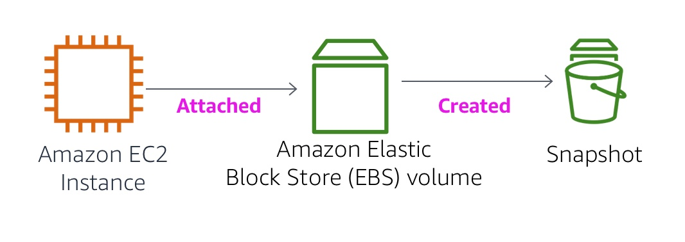

Version 5.1.3 (spl2)

This lab focuses on Amazon Elastic Block Store (Amazon EBS), a key underlying storage mechanism for Amazon EC2 instances. In this lab, you will learn how to create an Amazon EBS volume, attach it to an instance, apply a file system to the volume, and then take a snapshot backup.
By the end of this lab, you will be able to:
To successfully complete this lab, you should be familiar with basic Amazon EC2 usage and with basic Linux server administration. You should feel comfortable using the Linux command-line tools.
Other AWS Services than the ones needed for this lab are disabled by IAM policy during your access time in this lab. In addition, the capabilities of the services used in this lab are limited to what's required by the lab and in some cases are even further limited as an intentional aspect of the lab design. Expect errors when accessing other services or performing actions beyond those provided in this lab guide.
Amazon Elastic Block Store (Amazon EBS) offers persistent storage for Amazon EC2 instances. Amazon EBS volumes are network-attached and persist independently from the life of an instance. Amazon EBS volumes are highly available, highly reliable volumes that can be leveraged as an Amazon EC2 instances boot partition or attached to a running Amazon EC2 instance as a standard block device.
When used as a boot partition, Amazon EC2 instances can be stopped and subsequently restarted, enabling you to pay only for the storage resources used while maintaining your instance's state. Amazon EBS volumes offer greatly improved durability over local Amazon EC2 instance stores because Amazon EBS volumes are automatically replicated on the backend (in a single Availability Zone).
For those wanting even more durability, Amazon EBS provides the ability to create point-in-time consistent snapshots of your volumes that are then stored in Amazon Simple Storage Service (Amazon S3) and automatically replicated across multiple Availability Zones. These snapshots can be used as the starting point for new Amazon EBS volumes and can protect your data for long-term durability. You can also easily share these snapshots with co-workers and other AWS developers.
This lab guide explains basic concepts of Amazon EBS in a step-by-step fashion. However, it can only give a brief overview of Amazon EBS concepts. For further information, see the Amazon EBS documentation.
Amazon EBS volumes deliver the following features:
This lab takes approximately 45 minutes to complete.
At the top of these instructions, click Start Lab to launch your lab.
Tip: If you need more time to complete the lab, then restart the timer for the environment by choosing the Start Lab button again.
Lab resources will be displayed on the top left corner.
Example:
Please wait for the lab to be ready, before proceeding.
At the top of these instructions, click AWS
This will open the AWS Management Console in a new browser tab. The system will automatically log you in.
Tip: If a new browser tab does not open, there will typically be a banner or icon at the top of your browser indicating that your browser is preventing the site from opening pop-up windows. Click on the banner or icon and choose "Allow pop ups."
Arrange the AWS Management Console tab so that it displays along side these instructions. Ideally, you will be able to see both browser tabs at the same time, to make it easier to follow the lab steps.
Do not change the lab region unless specifically instructed to do so.
In this task, you will create and attach an Amazon EBS volume to a new Amazon EC2 instance.
In the AWS Management Console, select the Services menu, and then select EC2 under Compute.
In the left navigation pane, click Instances.
An Amazon EC2 instance named Lab has already been launched for your lab.
Note the Availability Zone of the instance. It will look similar to us-west-2a.
In the left navigation pane, click Volumes.
You will see an existing volume that is being used by the Amazon EC2 instance. This volume has a size of 8 GiB, which makes it easy to distinguish from the volume you will create next, which will be 1 GiB in size.
Click Create Volume then configure:
Volume Type: General Purpose SSD (gp2)
Size (GiB): 1. NOTE: You may be restricted from creating large volumes.
Availability Zone: Select the same availability zone as your EC2 instance.
Click Add Tag
In the Tag Editor, enter:
NameMy VolumeClick Create Volume then click Close
Your new volume will appear in the list, and will move from the creating state to the available state. You may need to click refresh to see your new volume.
You can now attach your new volume to the Amazon EC2 instance.
Select My Volume.
In the Actions menu, click Attach Volume.
Click in the Instance field, then select the instance that appears (Lab).
Note that the Device field is set to /dev/sdf. You will use this device identifier in a later task.
Click Attach The volume state is now in-use.
These instructions are for Windows users only.
If you are using macOS or Linux, skip to the next section.
Read through the three bullet points in this step before you start to complete the actions, because you will not be able see these instructions when the Details panel is open.
Download needed software.
Open putty.exe
Configure PuTTY to not timeout:
30This allows you to keep the PuTTY session open for a longer period of time.
Configure your PuTTY session:
Click Yes, to trust the host and connect to it.
When prompted login as, enter: ec2-user
This will connect you to the EC2 instance.
These instructions are for Mac/Linux users only. If you are a Windows user, skip ahead to the next task.
Read through all the instructions in this one step before you start to complete the actions, because you will not be able see these instructions when the Details panel is open.
Open a terminal window, and change directory cd to the directory where the labsuser.pem file was downloaded.
For example, run this command, if it was saved to your Downloads directory:
cd ~/DownloadsChange the permissions on the key to be read only, by running this command:
xxxxxxxxxxchmod 400 labsuser.pemReturn to the AWS Management Console, and in the EC2 service, click on Instances.
The Lab instance should selected.
In the Details tab, copy the IPv4 Public IP value.
Return to the terminal window and run this command (replace <public-ip> with the actual public IP address you copied):
xxxxxxxxxxssh -i labsuser.pem ec2-user@<public-ip>Type yes when prompted to allow a first connection to this remote SSH server.
Because you are using a key pair for authentication, you will not be prompted for a password.
In this task, you will add the new volume to a Linux instance as an ext3 file system under the /mnt/data-store mount point.
If you are using PuTTY, you can paste text by right-clicking in the PuTTY window.
View the storage available on your instance:
xxxxxxxxxxdf -hYou should see output similar to:
xxxxxxxxxxFilesystem Size Used Avail Use% Mounted ondevtmpfs 488M 60K 488M 1% /devtmpfs 497M 0 497M 0% /dev/shm/dev/xvda1 7.8G 982M 6.7G 13% /This is showing the original 8GB disk volume. Your new volume is not yet shown.
Create an ext3 file system on the new volume:
xxxxxxxxxxsudo mkfs -t ext3 /dev/sdfCreate a directory for mounting the new storage volume:
xxxxxxxxxxsudo mkdir /mnt/data-storeMount the new volume:
xxxxxxxxxxsudo mount /dev/sdf /mnt/data-storeTo configure the Linux instance to mount this volume whenever the instance is started, you will need to add a line to /etc/fstab.
xxxxxxxxxxecho "/dev/sdf /mnt/data-store ext3 defaults,noatime 1 2" | sudo tee -a /etc/fstabView the configuration file to see the setting on the last line:
xxxxxxxxxxcat /etc/fstabView the available storage again:
xxxxxxxxxxdf -hThe output will now contain an additional line - /dev/xvdf:
xxxxxxxxxxFilesystem Size Used Avail Use% Mounted ondevtmpfs 488M 60K 488M 1% /devtmpfs 497M 0 497M 0% /dev/shm/dev/xvda1 7.8G 982M 6.7G 13% //dev/xvdf 976M 1.3M 924M 1% /mnt/data-storeOn your mounted volume, create a file and add some text to it.
xxxxxxxxxxsudo sh -c "echo some text has been written > /mnt/data-store/file.txt"Verify that the text has been written to your volume.
xxxxxxxxxxcat /mnt/data-store/file.txt
In this task, you will create a snapshot of your EBS volume.
You can create any number of point-in-time, consistent snapshots from Amazon EBS volumes at any time. Amazon EBS snapshots are stored in Amazon S3 with high durability. New Amazon EBS volumes can be created out of snapshots for cloning or restoring backups. Amazon EBS snapshots can also be easily shared among AWS users or copied over AWS regions.
In the AWS Management Console, click on Volumes and select My Volume.
In the Actions menu, click Create Snapshot.
Click Add Tag then configure:
NameMy SnapshotYour snapshot will be listed in the Snapshots console.
In the left navigation pane, click Snapshots.
Your snapshot is displayed. It will start with a state of pending, which means that the snapshot is being created. It will then change to a state of completed. Only used storage blocks are copied to snapshots, so empty blocks do not take any snapshot storage space.
In your remote SSH session, delete the file that you created on your volume.
xxxxxxxxxxsudo rm /mnt/data-store/file.txtVerify that the file has been deleted.
xxxxxxxxxxls /mnt/data-store/Your file has been deleted.
If you ever wish to retrieve data stored in a snapshot, you can Restore the snapshot to a new EBS volume.
In the AWS Management Console, select My Snapshot.
In the Actions menu, click Create Volume.
For Availability Zone Select the same availability zone that you used earlier.
Click Add Tag then configure:
NameRestored VolumeWhen restoring a snapshot to a new volume, you can also modify the configuration, such as changing the volume type, size or Availability Zone.
In the left navigation pane, click Volumes.
Select Restored Volume.
In the Actions menu, click Attach Volume.
Click in the Instance field, then select the instance that appears (Lab).
Note that the Device field is set to /dev/sdg. You will use this device identifier in a later task.
Click Attach
The volume state is now in-use.
Create a directory for mounting the new storage volume:
xxxxxxxxxxsudo mkdir /mnt/data-store2Mount the new volume:
xxxxxxxxxxsudo mount /dev/sdg /mnt/data-store2Verify that volume you mounted has the file that you created earlier.
xxxxxxxxxxls /mnt/data-store2/You should see file.txt.
Congratulations! You now have successfully:
Congratulations! You have completed the lab.
Choose End Lab at the top of this page, and then select Yes to confirm that you want to end the lab.
A panel indicates that DELETE has been initiated... You may close this message box now.
A message Ended AWS Lab Successfully is briefly displayed, indicating that the lab has ended.
For more information about AWS Training and Certification, see https://aws.amazon.com/training/. Your feedback is welcome and appreciated. If you would like to share any suggestions or corrections, please provide the details in our AWS Training and Certification Contact Form. © 2022 Amazon Web Services, Inc. and its affiliates. All rights reserved. This work may not be reproduced or redistributed, in whole or in part, without prior written permission from Amazon Web Services, Inc. Commercial copying, lending, or selling is prohibited.